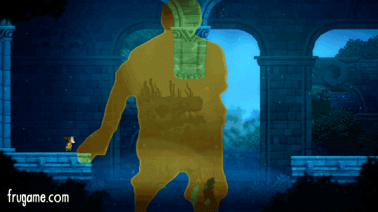
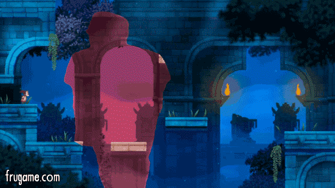

<div>
<div>
<div dir="ltr">
<p>Hi!</p>
<p>FRU is a puzzle platformer for Kinect where your body becomes a portal between worlds and&nbsp;<strong>it's coming out on July 13th!</strong><br /><br />We just released our&nbsp;<strong>launch trailer</strong>:&nbsp;<a href="https://youtu.be/pH2zzMEBb7E" target="_blank" data-saferedirecturl="https://www.google.com/url?hl=en-GB&amp;q=https://youtu.be/pH2zzMEBb7E&amp;source=gmail&amp;ust=1467209657939000&amp;usg=AFQjCNESOs5en2rD5do3vp8wwN4PcoHNRg">https://youtu.be/<wbr />pH2zzMEBb7E</a></p>

<p>It started as a crazy, experimental Game Jam prototype by seven students and was shown during the Microsoft conference at E3 2014. Two years later it's finally ready to come out and we're super excited about it!<br /><br />We would love for you to play it, so here&rsquo;s your<strong>&nbsp;review key</strong>:</p>
<div>
<p>EMAIL CONTACT@FRUGAME.COM</p>
<div><em>No access to a Kinect? Don't worry,&nbsp;<a href="https://docs.google.com/forms/d/10kxsJZ2w4qVjfYBiXEUoKiI1I9BR8sqG_Xfj8J9MNIo" target="_blank" data-saferedirecturl="https://www.google.com/url?hl=en-GB&amp;q=https://docs.google.com/forms/d/10kxsJZ2w4qVjfYBiXEUoKiI1I9BR8sqG_Xfj8J9MNIo&amp;source=gmail&amp;ust=1467209657940000&amp;usg=AFQjCNEv3p3LMpveOmFZQhY3juBa2a8wXA">we got you covered.</a></em></div>
We kindly ask to only publish reviews from&nbsp;<strong>July 12th onwards. </strong></div>
<div><strong><br /></strong><br />Here's some useful links:
<ul>
<li><strong>Release Trailer</strong>:&nbsp;<a href="https://youtu.be/pH2zzMEBb7E" target="_blank" data-saferedirecturl="https://www.google.com/url?hl=en-GB&amp;q=https://youtu.be/pH2zzMEBb7E&amp;source=gmail&amp;ust=1467209657940000&amp;usg=AFQjCNHc9CkP9bSZ9IYk2xVD_QlXpF-Mjw">https://youtu.be/<wbr />pH2zzMEBb7E</a></li>
<li><strong>Press Kit:</strong>&nbsp;<a href="http://frugame.com/presskit" target="_blank" data-saferedirecturl="https://www.google.com/url?hl=en-GB&amp;q=http://frugame.com/presskit&amp;source=gmail&amp;ust=1467209657940000&amp;usg=AFQjCNFyQs3gGExrX_pXtzKczY5Ld8EOKA">http://frugame.com/<wbr />presskit</a>&nbsp;</li>
<li><strong>Official Site</strong>:&nbsp;<a href="http://frugame.com/" target="_blank" data-saferedirecturl="https://www.google.com/url?hl=en-GB&amp;q=http://frugame.com/&amp;source=gmail&amp;ust=1467209657940000&amp;usg=AFQjCNFa5PqvzmH5kYZvVDDprZjK270e1w">http://frugame.com</a></li>
<li><strong>Useful Images / Screenshots</strong>:&nbsp;<a href="http://frugame.com/presskit/fru/images/images.zip" target="_blank" data-saferedirecturl="https://www.google.com/url?hl=en-GB&amp;q=http://frugame.com/presskit/fru/images/images.zip&amp;source=gmail&amp;ust=1467209657940000&amp;usg=AFQjCNFVMg9amdY_a4FGxjcaBMRPZo8YBw">Link</a></li>
</ul>
<div><br />FRU is a puzzle platformer that features an innovative&nbsp;<strong>use of Kinect, in which your silhouette becomes a "portal" between two worlds.&nbsp;</strong><br />You will find yourself solving puzzles by strategically positioning your body, combining physical interaction with traditional platforming.<br /><br />
<br /><br />The game features four completely different chapters, all based around our innovative use of the silhouette,&nbsp;<strong>with a unique twist</strong>&nbsp;to each one of them.<br /><br />In addition to moving and balancing your body to solve levels, you&rsquo;ll also find yourself&nbsp;<strong>swimming inside your silhouette, striking crazy poses&nbsp;</strong>to activate contraptions, and awkwardly tiptoeing to avoid dangerous hazards!</div>
<div>
<ul>
<li><strong>Unique</strong>, never seen before use of Kinect</li>
<li><strong>110 Levels</strong>&nbsp;there to prove that, and&nbsp;<strong>24 Extra Collectibles</strong>&nbsp;as if the game wasn't challenging enough!</li>
<li>Our original E3 2014<strong>&nbsp;Co-op Build</strong>&nbsp;ready to be unlocked!</li>
<li>Achievements that ask you to move muscles you didn't even know you had!</li>
</ul>
<p>We put so much effort and time into this game because we believed the concept was something unique that only Kinect could offer.</p>
<div>Unfortunately the audience for it seems to have slowly decreased over time, but that hasn't stopped us from trying to prove that this device could have, ultimately,&nbsp;<strong>been something special.</strong></div>
</div>
<div><br />Thank you so much for reading this!</div>
<div><em><strong>Mattia Traverso&nbsp;</strong>(Producer/Designer&nbsp;<a href="http://frugame.com/" target="_blank" data-saferedirecturl="https://www.google.com/url?hl=en-GB&amp;q=http://frugame.com/&amp;source=gmail&amp;ust=1467209657940000&amp;usg=AFQjCNFa5PqvzmH5kYZvVDDprZjK270e1w">ht<wbr />tp://frugame.com</a>)</em>
<div><em>Through Games VoF, KvK&nbsp;60710136, Breda, The Netherlands</em></div>
<p></p>
</div>
</div>
</div>
</div>
</div>
